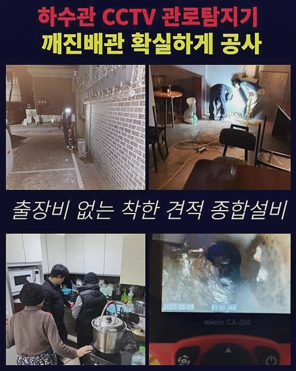
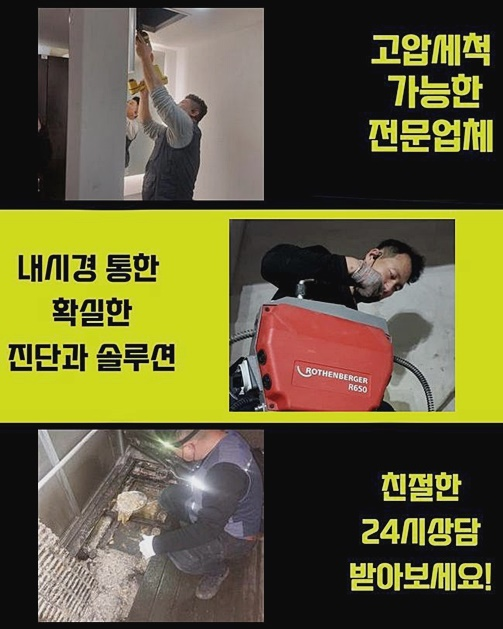
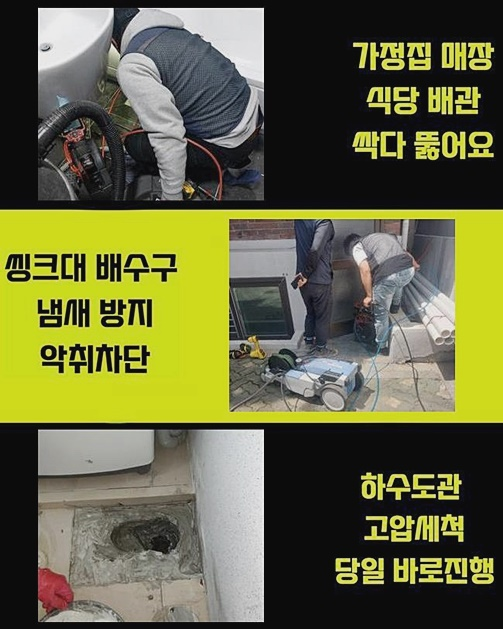
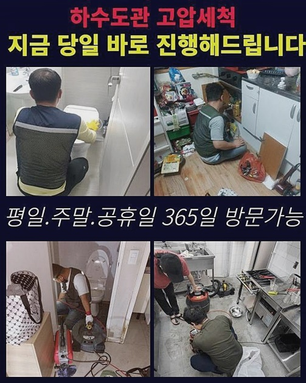
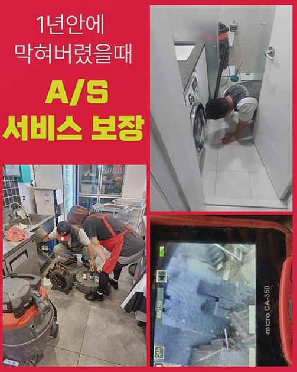
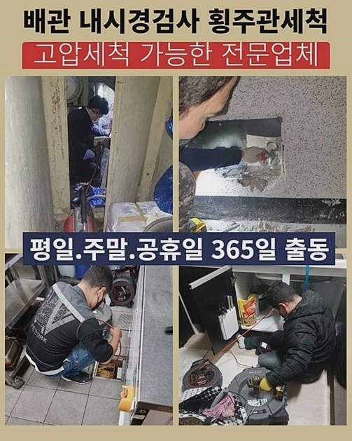
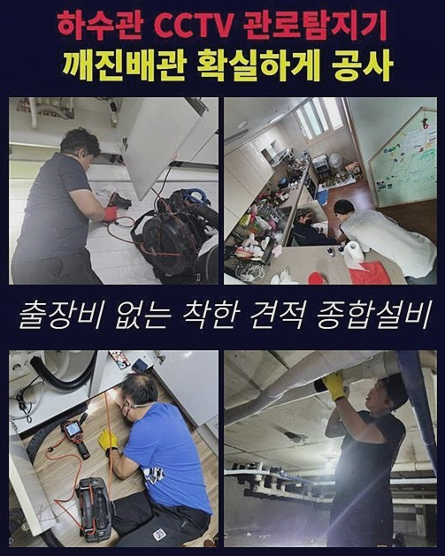

🏠 성남 도촌동변기배관막힘 은행동 하수구청소장비 설비공사
용인시 처인구 배관막힘 전문 시공 후기

📋 작업 개요
- 위치: 용인시 처인구, 수원시 영통구, 화성시 동탄
- 서비스 유형: 배관막힘, 하수구청소, 내시경점검
- 작업 일시:
- 업체명: 하수구수사대 (010-5615-2118)
🔍 문제 상황
성남 도촌동변기배관막힘 은행동 하수구청소장비 설비공사
저희팀은 손님께서 구하시는 시간대에 아무때라도 내방갈 수 있으며 빠르게 처리합니다
저녁 10시 이후나 주말이라고 하여도 즉각 내방하여 시공에 착수합니다
의뢰인의 신청에 재빨리 응하여 퀄리티높은 뚫음 시공을 시행하는 부분이 저희 기본방침입니다
빠른 안내와 공사로 기분 좋은 결과물을 충족하도록 정성을 기울이고 있어요
초기엔 원인을 알아내는 데 작업력이 적지 않게 소용되었지만 건조물 바닥부의 파이프가 범인이었다는 사실을 간파한 뒤 방법을 세우게 되었죠
결과적으로 건물 사용자들의 고통을 감소시키고 내방객들이 가뿐하게 쓰시도록 조치할 수 있었죠
이와 같은 장애는 다채로운 까닭으로 일어나기에 조속한 처치가 요망됩니다
저희팀은 언제나 의뢰자의 고민에 즉각 응하여 퀄리티높은 작업을 시행해 드릴게요
건물 내부에서 발발한 물막힘 양상은 1년 전부터 진행됐단 사실을 방문 후에 알아볼 수 있었어요
이 문제로 근방의 자영업자들에게 손해를 끼쳤는데 특별히 물을 쓰는 과정이 곤란했다고 토로하셨어요
이것은 매장을 꾸려나가는 데에 엄청난 해를 발생하게 하였기에 재빠른 처리가 불가무했죠
급작스러운 물막힘은 구조물의 형태나 나이 그것에 더하여 급격한 온도변화 등 다채로운 이유로 터져버리는 것인데요

🔎 원인 분석
💡 전문가 진단: 정밀 진단 장비를 사용하여 슬러지의 고착 여부를 판명하고 타격/세척 작업을 실시했습니다.
그러므로 근원점을 간파하기 위해선 다채로운 가망성을 살펴보아야 하죠
일반적인 주택에서 난도가 높은 시공을 진행한 것을 포함하여 진중한 마음가짐으로 언제나 전문적 내용을 숙지하는 태도를 견지하여 최고의 자리를 유지하고 있어요
우리들은 고성능의 내시경촬영설비와 석션장비를 비롯해 물샘 등을 알아낼 수 있는 다채로운 기기들을 소지중이기에 기타 전문가들과 비교 앞서나갈 수 있는겁니다
이러한 기기들을 기초로 해를 일으킨 요인을 소멸시키는 단계를 밟고 있는데요
우리들은 날쌔게 트러블의 연유를 건조물 하단에 설치된 배수파이프에서 찾아냈어요
해당하는 처소는 깊게 매립된 관계로 손수월하게 볼 수 있는 위치가 아니었으나 고약한 트러블이 발발한 처소였어요
바로 합당한 기계를 사용해서 해당 트러블을 막힘없이 해결하게 되었는데요
일반 상가에서부터 아파트까지 여러종류의 처소에서 나타나는 문제여서 전문인의 방문이 반드시 요망됩니다
혹여나 막힘이 난해한 상태로 진행되었을 때에 전문적인 진단이 요망되고 혼자 해결하려 한다면 되레 문제만 커지게 된답니다
그러니 여러가지 곤란을 만나시는 것보단 기술자에게 의뢰하는 게 낫습니다
공구가 파이프에 박혀버릴 수도 있었기 때문에 가느다란 스프링기기를 이용해 빠르게 작동하여 찌꺼기를 소쇄하였으며 그후 십여분간 계속하여 배수관을 청결하게 바꿔냈습니다
가정내의 욕실과 싱크대와 연결된 파이프에 누증된 이물들을 처치한 뒤 고압 물세정을 이용 원상복구할 수가 있었는데요
이를 통하여 물막힘없는 편안한 생활을 확보할 수가 있었어요
빌라나 아파트를 막론하고 배수관에 나타난 고장을 없애기 위해선 일차적으로 주된 이유를 알아내야 하죠

🔧 작업 과정
이물들을 조속히 처치 후 배관카메라를 사용해서 하수관 내측을 확인하여 무슨 문제점이 발현된 건지 검토했어요
간소하게 위에만 없애는 것에서 그치는 게 아니고 근본적인 문제점을 알아보지 않는다면 시공이 지나 시간이 흘러 쉽게 차단현상이 빚어질 수 있죠
그러므로 저희들은 근원 지점을 발견하지 못하면 금전지불 요청을 안한다는 방향성을 갖고 있답니다
고객님을 향한 우리의 이런 태도로 합리적인 성과를 드렸답니다
저희들은 제일 상층의 잔류물을 쇄소 진행하기로 합의합니다
해당 문제에 관하여 문의자분에게도 알려드렸으며 막힘이 갑작스럽게 벌어진거라 하시더라고요
비전문인의 입장에서는 까닭을 알아내기 힘겨우나 우리팀은 다채로운 고장과 관련한 배테랑들로만 구성돼 있으므로 어떠한 고장이라 하여도 대응할 수 있어요
저희팀은 능수능란한 기술인으로 이루어져 있고 해당 세대에 출동한 담당자도 책임감 넘치는 베테랑이셨어요
이러한 분들이 같이 공사하기에 까다로운 문제점도 물리칠 수 있죠
배수관 전용 cctv를 삽입하여 관 내의 모습을 보았더니 상당량의 침전물이 누적되어 있는 것을 직관하게 되었답니다
이를 기타 배수관과 통하는 것은 아닐지에 관해 검수하는 편이 옳겠다고 마음 먹고 주방시설물 전반에 걸친 관을 살피기로 정했답니다
그 공간으로 이동하여 내측의 모양새를 내시경으로 알아보니 주방의 관로와 통하고 있다는 사실을 알게 되었어요
이를 통해 주된 이유를 파악하고 조치를 세울 수가 있었어요
이에 정밀한 조사와 빠른 시공이 관로 개문작업의 과정에서 필수적 노릇을 담당한다는 걸 알았죠
같은 시간 다른 지점에선 조속한 처리를 바라며 즉각 방문을 요청했는데요
전문가는 조속하게 그곳에 도달하여 사태를 잠재우기 위하여 체계적으로 작업도구를 챙겼어요
파이프 현황을 파악하려 수돗물을 주입하였더니 천천히 없어지는 것을 관찰하였답니다
이는 배관 내에 고형물이 자리잡고 있다는 걸 알려주는 것이었어요
시간의 흐름에 따라 더 느려지는 모양새를 마주할 수 있답니다
이에 대응하여 우리들은 합당한 수단을 응용하여 훼손된 배수관을 효율적으로 처치하였습니다
배수관과 연계된 트러블은 기술자의 진단과 적기에 완결하는 것이 필요합니다


✅ 작업 완료
시공 과정에서는 굴곡진 파이프 내부를 조사해볼 필요성이 있어 요구되는 기기를 전체적으로 써서 능률적으로 시공을 실시했습니다
오물탱크에 결부된 배수관까지 부드럽게 물이 흘러갈 수 있게 진중하게 시공하고 있답니다
예측과 다르게 일어나기 쉬운 트러블들도 빠르게 대처하여 퀄리티있는 결과를 제공해 드리려 힘쓰고 있답니다
미미한 증상이라고 하찮게 여기고 방관하시는 분들이 꽤 있으신데요
이것은 더 난처한 경우를 유발시키는 단초가 될 수 있으므로 장애가 발현되었다면 조속히 진단을 하시는게 옳습니다
문의자께서 신뢰감 넘치는 성과를 만나시게끔 신중하게 노력하겠습니다




⚠️ 하수구 배관 막힘 예방 및 관리 가이드
- ✅ 머리카락, 비닐, 물티슈 등 물에 분해되지 않는 이물질은 절대 흘려보내지 마세요.
- ✅ 기름기 많은 식기는 설거지 전 키친타올로 먼저 기름때를 닦아내세요.
- ✅ 주기적으로 배수구에 뜨거운 물을 가득 부어주어 유지방 고착을 방지하세요.
- ✅ 작업 후 1년 이내 재발 시 무상 A/S 보증 서비스를 제공합니다.
💡 핵심 정리
- 확실한 장비 작업(내시경 점검 및 샤프트 스케일링)으로 원인을 뿌리 뽑습니다.
- 작업 후 1년 이내에 동일한 부위 재발 시 100% 무상 A/S 서비스를 보장합니다.
- 서울 · 경기 · 인천 전 지역에 24시간 언제든 긴급 출동할 수 있도록 항시 대기 중입니다.
❓ 자주 묻는 질문 (FAQ)
🚨 용인시 처인구 배관막힘 문제로 고민이신가요?
정확한 원인 진단과 확실한 시공으로 재발 없는 해결을 약속드립니다.
24시간 긴급 출동 | 서울 · 경기 · 인천 전지역 | 1년 내 재발 시 무상 A/S